Key Project Experiences
Our Key Clients & Partners
Hover over any logo to preview company profiles
PT. PERTAMINA (PERSERO)
Energy & OffshoreSubsea pipeline surveys & marine geophysics.
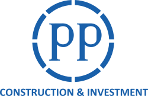
PT. PP (PERSERO) TBK
InfrastructureGeotechnical soil investigation & port modeling.
PT. WASKITA KARYA
ConstructionTopographic, bathymetric mapping & advisory.
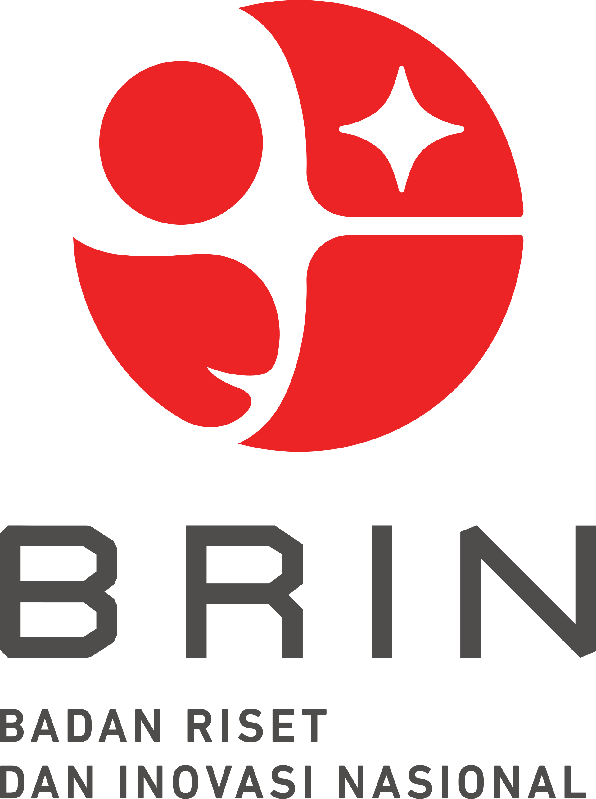
BRIN
ResearchMarine technology R&D & current modeling.
BADAN INFORMASI GEOSPASIAL
AuthorityNational hydrographic survey packages.
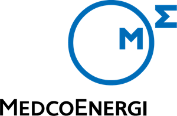
MEDCO ENERGI
Oil & GasHydrology & pipeline route surveys.
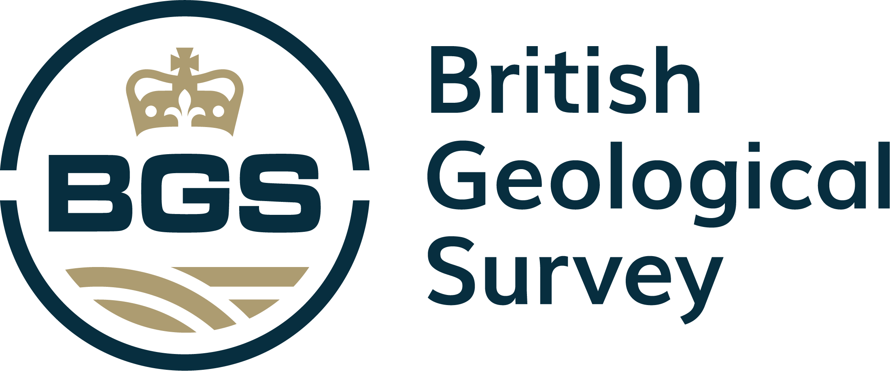
BRITISH GEOLOGICAL SURVEY
ResearchSeismic single-channel profiling.
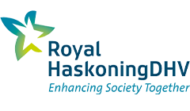
ROYAL HASKONING DHV
EngineeringHydrographic & environmental surveys.
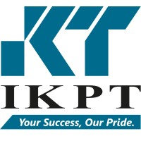
PT. IKPT
EPC ContractorSoil investigation & CPT testing.
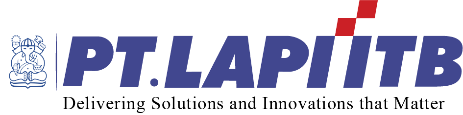
PT. LAPI ITB
ConsultancySub-bottom profiling & pipeline surveys.
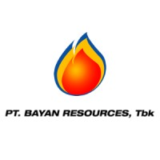
BAYAN RESOURCES
MiningHydrology & coal barge jetty surveys.
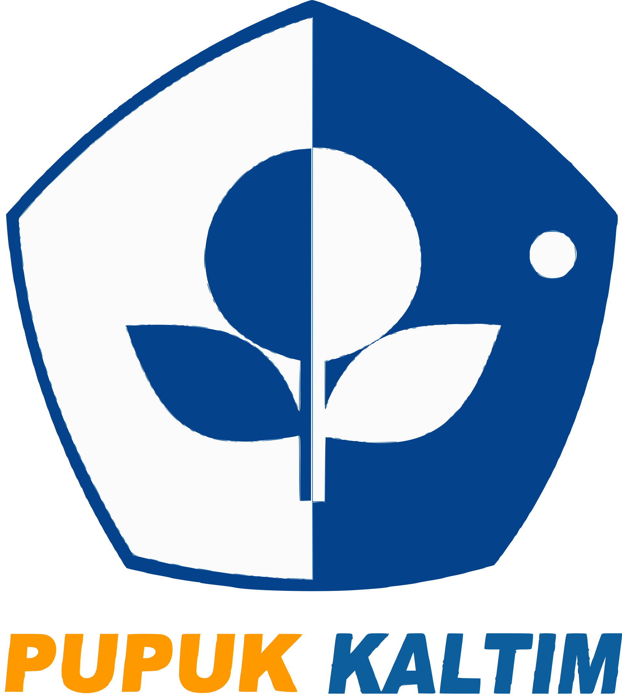
PT. PUPUK KALTIM
PetrochemicalSoil investigation for jetty facility.
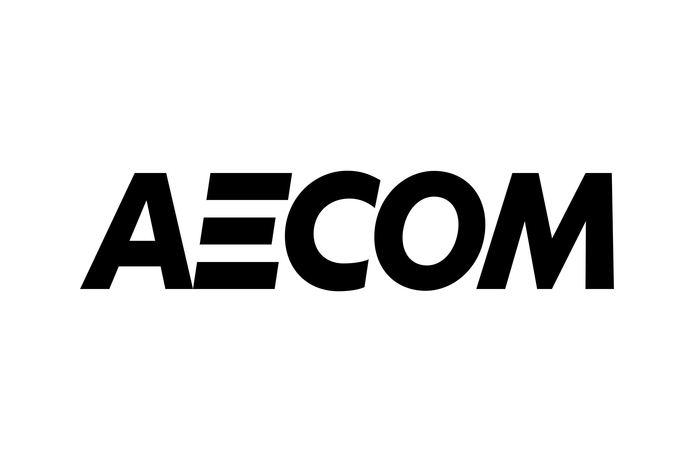
AECOM INDONESIA
ConsultancyBathymetric & tidal survey services.
INDIKA LOGISTICS
LogisticsPort basin bathymetry & safety.
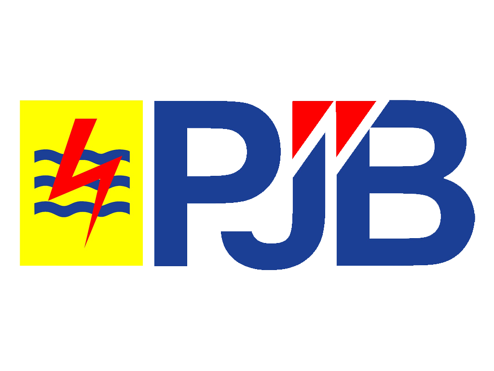
PT. PJB
PowerGeophysical surveys for seawalls.
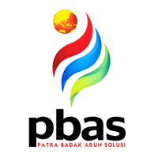
PT. PATRA BADAK
EngineeringMooring facility revitalization.
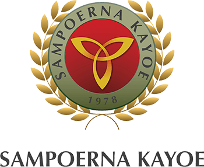
SAMPOERNA KAYOE
ForestryRiver flow & bathymetry measurement.
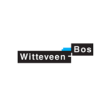
WITTEVEEN+BOS
CoastalGeotechnical site investigation.
Geophysical Survey
Pulau Buru, Kepulauan Riau | Client: CV Amarta Jasa Karya
Survey and Design Coastal Protection for Resort Bintan
Bintan, Kepulauan Riau | Client: PT. Aramsa Infrayasa
Sub Bottom Profiler Survey Area Dredging
Bangkalan, East Java | Client: PT Samudera Galangan Madura
Engineering Design Main Jetty at Balak Island
Pulau Balak, Lampung | Client: PT. Pantai Bensor Rekreasi Bahari
Port Masterplan for Tanjung Pinggir Development Batam Project
Tanjung Pinggir Batam | Client: PT Pandega Desain Weharima
Engineering Design Service Jetty at Balak Island, Lampung
Pulau Balak, Lampung | Client: PT Pantai Bensor Rekreasi Bahari
Topography, Bathymetry and Seabed Sampling Survey for ECOFishing Project in PPS Belawan
PPS Belawan, Medan | Client: PT Haskoning Indonesia
Topography Survey in PT AMMAN Mineral Sumbawa
Benete, Sumbawa | Client: PT Haskoning Indonesia
Topography Survey And Soil Investigation Work For FEED Green Refinery Plaju Project
Plaju South Sumatera | Client: PT. IKPT
Seismic Single Channel Survey
Sanur - Bali | Client: PT Unggul Sarana Survey
Seismic Single Channel Survey
Karimun, Kep. Riau | Client: Personal
Bathymetry Survey for Navigation Assessment
Pelabuhan Tanjung Api Api Sumatera Selatan | Client: PT IMEC INTERNATIONAL SERVICES
Sub Bottom Profiler Survey
Pontianak, West Kalimantan | Client: PT Geovaruna
Bathymetry Surver in Siak
Siak, Riau | Client: PT MOSES ENGINEERING
Desain Thermal Dispersion PLTU Timor 1
Oisina, Timor | Client: PT. PP Persero
Advanced Soil Investigation for Ammonia Urea Plant Area in Fakfak
Fakfak, West Papua | Client: PT Pupuk Kalimantan Timur
Hydrology Study Sungai Mahakam
Benangaq, Kutai Barat | Client: PT. Indovisi Sentosa Mandiri
Soil Investigation & Topography Survey Blawan Ijen GPP Unit
Ijen, Jawa Timur | Client: PT. IKPT
Topography And Oceanography Survey Sibolga
Sibolga, North Sumatera | Client: PT MOSES ENGINEERING
Oceanography Survey and Soil Investigation for EPC Arun LNG Hub Expansion Facility Project
Lhokseumawe, Aceh | Client: PT. IKPT
Met-Oceanography, Bathymetry, & DED Jetty lampung
Lampung | Client: PT Pantai Bensor Rekreasi Bahari
Oceanography Survey Opus Bay Batam
Batam | Client: PT. Aramsa
Coastal Engineering Design Opus Bay Batam
Batam | Client: PT. Aramsa
Bathymeteri and Oceanography Survey at Obi Island
Flux - Obi Island | Client: PT Geocem
Pekerjaan Conceptual Design Review New Ancol Marina Development II
Jakarta | Client: PT Pandega Desain Weharima
Geophysical & Oceanography Survey for New Pipeline RU Pertamina Pakning
Pakning | Client: PT. LAPI ITB
Hydrology Survey Bayan
Bayan, Kutai | Client: PT Bayan Resources Tbk
Soil Investigation for Jetty and Supporting Facility Proyek Mines of Bahadopi Block 2 & 3
Bahadopi, Morowali | Client: PT. PP Persero
Reclamation Design in Manado
Manado | Client: PT. Aramsa Infrayasa
Seismic Single Channel Survey Krakatau
Krakatau | Client: British Geological Survey
Detailed Engineering Design (DED) Balak
Pulau Balak, Lampung | Client: PT Pantai Bensor Rekreasi Bahari
Hydrology Survey for Pipeline Routes and Jetty at North Kalimantan
Kalimantan Utara | Client: Medco Energi
Bathymetry, Topography & Geophysical Survey for Seawall in PJB Muara Karang
Jakarta | Client: PT LAPI / PJB
Environmental Model (Thermal & Particle Tracking Model) PLTU Timor 1
Kupang | Client: PT. PP Persero
Pekerjaan Studi Kelayakan Perencanaan FSO 3 Lokasi - Kalimantan Tengah
Kalimantan Tengah | Client: PT Pandega Desain Weharima
Proyek Pekerjaan Penataan F1H2O Balige, Danau Toba
Toba, Sumatera Utara | Client: Direktorat Pengembangan Kawasan Permukiman Ditjen Cipta Karya
Pekerjaan Conceptual Design Review New Ancol Marina Development
Ancol, Jakarta | Client: PT Pandega Desain Weharima
Hydro-Oceanography, Topography Habitat Mapping & Marine Biota - Perencanaan Dermaga Pulau Balak
Pulau Balak, Lampung | Client: PT Pantai Bensor Rekreasi Bahari
Offshore Soil Investigation for New Jetty Development - FEED DHT RU II Dumai
Dumai, Riau | Client: PT. IKPT
Topographic Survey and Soil Investigation Blawan Ijen Geothermal
Ijen | Client: PT. IKPT
River Cleanup System in Pantai Indah Kapuk Jakarta
Jakarta | Client: PT Haskoning Indonesia
Site and Soil Investigation in Cilegon Banten
Cilegon, Banten | Client: PT. Witteveen Bos Indonesia
Survey Investigation and Design for Port in Tarakan Area
Tarakan | Client: Balikpapan Chip Lestari
Underwater - Geophysical Survey Pertamina Balikpapan
Balikpapan | Client: RDMP JO Balikpapan
Benthic Survey & Sediment Sampling
Tuban | Client: PT Haskoning Indonesia
Revitalisasi Sarana Tambat PT. Pertamina TBBM Badas NTB
Badas, NTB | Client: PT. PATRA BADAK ALUN SOLUSI
Revitalisasi Sarana Tambat PT. Pertamina TBBM Camplong
Camplong, Jawa Timur | Client: PT. PATRA BADAK ALUN SOLUSI
Hydrographic, Geophysical and Environmental Surveys Muara Karang
Jakarta | Client: PT Haskoning Indonesia
Bathymetry Survey for The New Futong Jetty
Riau | Client: PT RAPP
Perencanaan/Desain Integrasi Pelindung Pantai
Lombok | Client: PT Lombok Sukses Bersama
Topography, Hydrographic & Geophysical Survey PLTGU Muara Karang
Jakarta | Client: PT LAPI / PJB
Soil Investigation, Topography, Hydro-Oceanography Survey
Ambon | Client: PT. Pertamina
Geophysical Survey - Seismic Single Channel Karimun Island
Karimun | Client: PT Teramahkota
Sub Bottom Profiling, Hydrographic Survey for Alur Pelayaran
Kep. Riau | Client: PT. LAPI ITB
Geophysical Survey in Pertamina Refinery Unit II Dumai
Dumai | Client: PT. LAPI ITB
Survey Seismik Pantul Dangkal Perairan Krakatau, Banten
Banten | Client: Lembaga Ilmu Pengetahuan Indonesia (LIPI)
Pelaksanaan Survei Topografi, Batimetri, dan Pasang Surut Pelabuhan di Gorontalo
Gorontalo | Client: PT. Atlantis Bina Persada
Pekerjaan Soil Investigation Fasilitas PLTU Bantaeng
Bantaeng | Client: PT. PP Persero
Survei Batimetri, Topography dan Pengamatan Pasang Surut Alur Pelayaran Sungai Jambi (Kuala Tungkal)
Kuala Tungkal, Jambi | Client: PT AECOM
Pekerjaan Batimetri dan Met-Ocean Survey Fasilitas Jetty Rencana PLTU Bantaeng
Bantaeng | Client: PT. PP Persero
Soil Investigation, Sea & Hydrological Survey Proyek Lombok GECC Power Plant (Peaker) 130-150 MW
Lombok | Client: PT. PP Persero
Survei Hidrografi Ciujung River
Banten | Client: PT. Panca Terra Firma
Pekerjaan Survey Batimetri, Topografi dan Pasang Surut Lokasi Jetty PLTG (Peaker) 100 MW
Gorontalo | Client: PT. PP Persero
Met-Oceanography Survey PLTU Lontar
Banten | Client: Black And Veatch
Survei Hidrografi LPI Papua (Jayapura)
Jayapura, Papua | Client: Badan Informasi Geospasial (BIG)
Pemodelan Potensi Arus Laut Untuk PLTAL Di Perairan Selat Sugi
Kep. Riau | Client: BBSPGL
Pemodelan Potensi Arus Laut Untuk PLTAL Di Perairan Nusa Penida
Bali | Client: BBSPGL